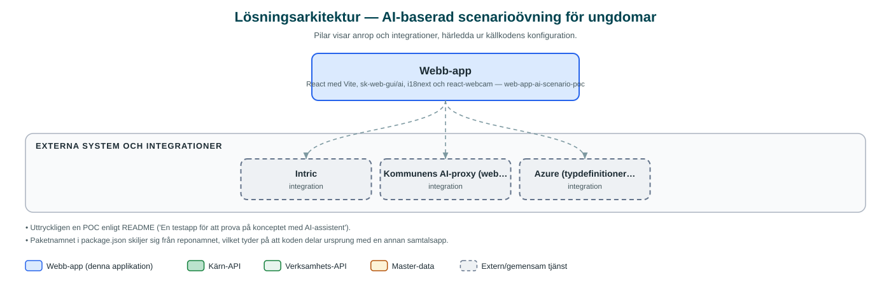

AI-baserad scenarioövning för ungdomar
Testapp där en AI-spelledare driver interaktiva scenarioövningar som låter ungdomar uppleva svåra valsituationer, till exempel kopplade till gängkriminalitet och droger.
Om applikationen
Appen är en proof of concept som prövar konceptet AI-assistent som spelledare. I gränssnittet kallas övningen 'Med livet som insats' med scenariot 'Bara en liten tjänst': deltagaren möter en berättelse som simulerar verkliga situationer och får göra val vars konsekvenser AI:n spelar upp.
Syftet är förebyggande – att ge ungdomar en trygg miljö att reflektera över svåra val kring exempelvis gängkriminalitet och droger. Övningen inleds med en introduktion som förklarar att innehållet kan upplevas obehagligt, och deltagaren kan när som helst pausa, fortsätta eller avsluta och få en summering.
AI-funktionerna drivs av kommunens AI-plattform Intric via den gemensamma AI-proxyn. Som POC saknar appen inloggning och konfigureras med assistent-id och nyckel.
Det här stödjer applikationen
- AI-driven berättelse – En AI-spelledare driver scenariot framåt utifrån deltagarens val och fria svar.
- Introduktion och samtycke – Tydlig introduktion om innehållets karaktär innan övningen startar.
- Paus och avslut – Deltagaren kan pausa, fortsätta eller avsluta med en avslutande summering.
- Installerbar app – Kan installeras som app (PWA) för bästa upplevelse.
Teknisk dokumentation
Nedan beskrivs hur applikationen är uppbyggd, vilka API:er den använder och vad som krävs för att driftsätta den. Informationen är härledd ur källkoden och dess konfiguration på GitHub.
Arkitektur

Applikationen är en webbaserad frontend (React med Vite, sk-web-gui/ai, i18next och react-webcam). Övriga integrationer som förekommer i koden: Intric, Kommunens AI-proxy (web-app-intric-backend), Azure (typdefinitioner för taltjänster finns i koden).
Teknikstack
- Frontend: React med Vite, sk-web-gui/ai, i18next och react-webcam
API-beroenden
Inga prenumerationer på kommunens API-plattform hittades i källkodens konfiguration.
Konfiguration och driftsättning
- .env utifrån .env.example.env
- VITE_INTRIC_API_BASE_URL till AI-proxyn samt VITE_ASSISTANT (assistent-id)
- VITE_INTRIC_API_KEY eller VITE_APPLICATION + VITE_HASH
- Valfri bakgrundsbild och tillåtna värdar
Noterbart ur källkoden
- Uttryckligen en POC enligt README ('En testapp för att prova på konceptet med AI-assistent').
- Paketnamnet i package.json skiljer sig från reponamnet, vilket tyder på att koden delar ursprung med en annan samtalsapp.
Källkod
Källkoden är öppen och finns hos Sundsvalls kommun på GitHub. I källkodsförrådet finns även instruktioner för att klona, konfigurera och starta applikationen i egen miljö.